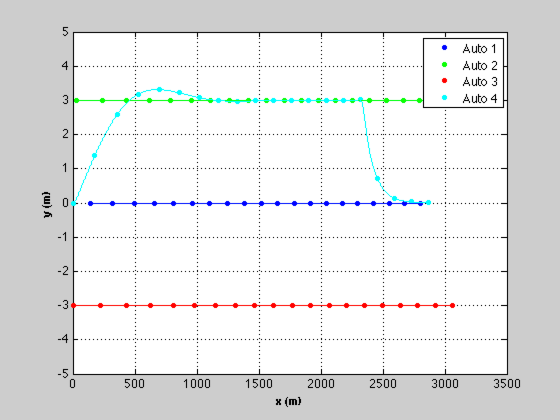
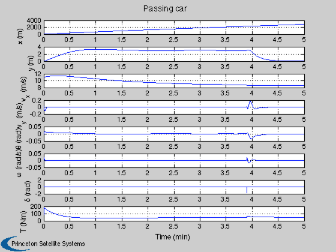
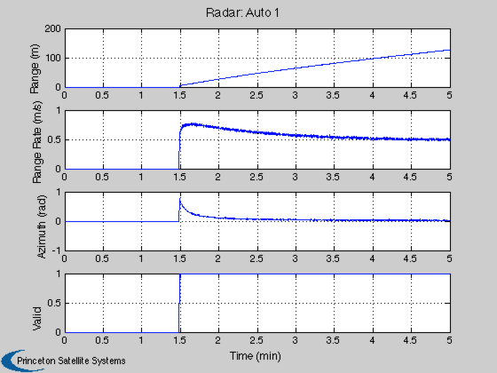
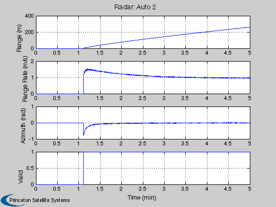
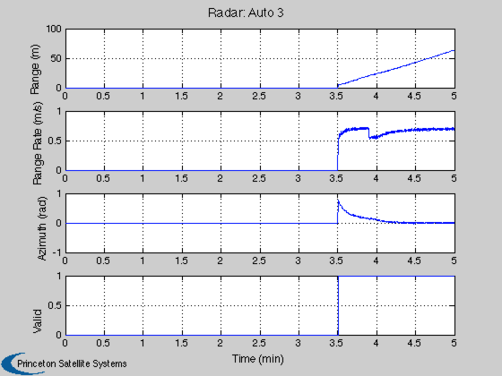
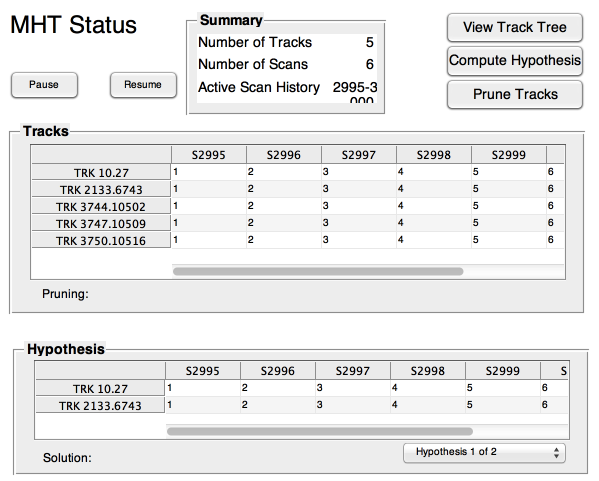
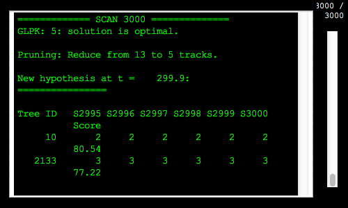
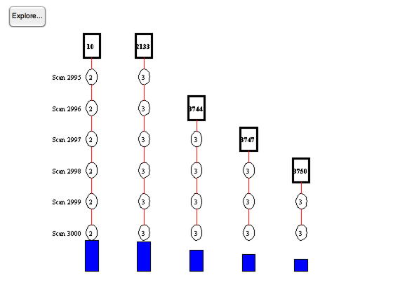

MHT automobile demo.
This models several cars driving near a car with radar. The cars are at different speeds and may perform passing maneuvers. The demo uses the Unscented Kalman Filter (UKF).
The simulation is run first and then the MHT code assigns measurements to the tracks. The simuation starts with no tracks and no valid measurements are seen for a while. Eventually the demo tracks three cars. Auto 4 carries the radar.
The car maneuvers and initial states can be modified.
------------------------------------------------------------------------- See also AutoRadar, AutomobilePassing, RHSAutomobile, RHSAutomobileXY, AutoRadarUKF -------------------------------------------------------------------------
Contents
-------------------------------------------------------------------------
% Copyright (c) 2013 Princeton Satellite Systems, Inc. % All rights reserved. % -------------------------------------------------------------------------
Initialize
%------------ % Set the seed for the random number generators. % If the seed is not set each run will be different. %--------------------------------------------------- seed = 45198; rng(seed); % Control screen output %---------------------- printHypotheses = 1; printTrackUpdates = 0; makePlots = 1; printPlots = 0; % Car 1 has the radar %-------------------- d.car(1).mass = 1513; d.car(1).delta = 0; d.car(1).r = [ 1.17 1.17 -1.68 -1.68;... -0.77 0.77 -0.77 0.77]; d.car(1).cDF = 0.25; d.car(1).cDS = 0.5; d.car(1).cF = 0.01; % Ordinary car tires on concrete d.car(1).radiusTire = 0.4572; % m d.car(1).torque = d.car(1).radiusTire*200.0; % N d.car(1).inr = 2443.26; d.car(1).x = [0;0;0;0;0;0]; d.car(1).fRR = [0.013 6.5e-6]; d.car(1).dim = [1.17+1.68 2*0.77]; d.car(1).h = 2/0.77; d.car(1).areaF = d.car(1).dim(2)*d.car(1).h; d.car(1).areaS = d.car(1).dim(1)*d.car(1).h; d.car(1).errOld = 0; d.car(1).passState = 0; % Make the other cars identical %------------------------------ d.car(2) = d.car(1); d.car(3) = d.car(1); d.car(4) = d.car(1); nAuto = length(d.car); % Velocity set points for cars 1-3. Car 4 will be passing %-------------------------------------------------------- vSet = [12 13 14]; % Time step setup %---------------- dT = 0.1; tEnd = 300; n = ceil(tEnd/dT); % Car initial state %------------------ x = [140; 0;12;0;0;0;... 30; 3;14;0;0;0;... 0;-3;15;0;0;0;... 0; 0;11;0;0;0]; % Radar %------ m = length(x)-1; dRadar.kR = [7:6:m;8:6:m]; dRadar.kV = [9:6:m;10:6:m]; dRadar.kT = 11:6:m; dRadar.noise = [0.1;0.01;0.01]; % [range; range rate; azimuth] dRadar.fOV = pi/4; dRadar.maxRange = 800; dRadar.noLimits = 0; % Plotting %--------- yP = zeros(3*(nAuto-1),n); vP = zeros(nAuto-1,n); xP = zeros(length(x)+2*nAuto,n); s = 1:6*nAuto;
Simulate
%---------- t = (0:(n-1))*dT; fprintf(1,'\nRunning the simulation...'); for k = 1:n % Plotting %--------- xP(s,k) = x; j = s(end)+1; for i = 1:nAuto p = 6*i-5; d.car(i).x = x(p:p+5); xP(j:j+1,k) = [d.car(i).delta;d.car(i).torque]; j = j + 2; end % Get radar measurements %----------------------- dRadar.theta = d.car(1).x(5); dRadar.t = t(k); dRadar.xR = x(1:2); dRadar.vR = x(3:4); [yP(:,k), vP(:,k)] = AutoRadar( x, dRadar ); %------------------ % Implement Control %------------------ % For all but the passing car control the velocity %------------------------------------------------- for j = 1:3 d.car(j).torque = -10*(d.car(j).x(3) - vSet(j)); end % The passing car %---------------- d.car(4) = AutomobilePassing( d.car(4), d.car(1), 3, 1.3, 10 ); % Integrate %---------- x = RK4(@RHSAutomobile, x, dT, 0, d ); end fprintf(1,'DONE.\n'); % The state of the radar host car %-------------------------------- xRadar = xP(1:6,:); % Plot the simulation results %---------------------------- NewFig( 'Auto' ) kX = 1:6:length(x); kY = 2:6:length(x); c = 'bgrcmyk'; j = floor(linspace(1,n,20)); [t, tL] = TimeLabl( t ); for k = 1:nAuto plot(xP(kX(k),j),xP(kY(k),j),[c(k) '.']); hold on end legend('Auto 1','Auto 2', 'Auto 3', 'Auto 4'); for k = 1:nAuto plot(xP(kX(k),:),xP(kY(k),:),c(k)); end XLabelS('x (m)'); YLabelS('y (m)'); set(gca,'ylim',[-5 5]); grid kV = [19:24 31 32]; yL = {'x (m)' 'y (m)' 'v_x (m/s)' 'v_y (m/s)' '\theta (rad)' '\omega (rad/s)' '\delta (rad)' 'T (Nm)'}; Plot2D( t,xP(kV,:), tL, yL,'Passing car'); % Plot the radar results but ignore cars that are not observed %------------------------------------------------------------- for k = 1:nAuto-1 j = 3*k-2:3*k; sL = sprintf('Radar: Auto %d',k); b = mean(yP(j(1),:)); if( b ~= 0 ) Plot2D(t,[yP(j,:);vP(k,:)],tL,{'Range (m)' 'Range Rate (m/s)' 'Azimuth (rad)' 'Valid'},sL); end end
Running the simulation...DONE.    
Implement MHT
%--------------- % Covariances %------------ r0 = dRadar.noise.^2; % Measurement 1-sigma q0 = [1e-7;1e-7;.1;.1]; % The baseline plant covariance diagonal p0 = [5;0.4;1;0.01].^2; % Initial state covariance matrix diagonal % Adjust the radar datastructure for the new state %------------------------------------------------- dRadar.noise = [0;0;0]; dRadar.kR = [1;2]; dRadar.kV = [3;4]; dRadar.noLimits = 1; ukf = KFInitialize('ukf','x',xRadar(1:4,1),'f',@RHSAutomobileXY,... 'h', {@AutoRadarUKF},'hData',{dRadar},'alpha',1,... 'kappa',2,'beta',2,'dT',dT,'fData',[],'p',diag(p0),... 'q',diag(q0),'m',xRadar(1:4,1),'r',{diag(r0)}); [mhtData, trk] = MHTInitialize( 'probability false alarm', 0.01,... 'probability of signal if target present', 1,... 'probability of signal if target absent', 0.01,... 'probability of detection', 1, ... 'measurement volume', 1.0, ... 'number of scans', 5, ... 'gate', 20,... 'm best', 2,... 'number of tracks', 1,... 'scan to track function',@ScanToTrackAuto,... 'scan to track data',dRadar,... 'distance function',@MHTDistanceUKF,... 'hypothesis scan last', 0,... 'remove duplicate tracks across all trees',1,... 'average score history weight',0.01,... 'prune tracks', 1,... 'create track', 1,... 'filter type','ukf',... 'filter data', ukf); % Size arrays %------------ m = zeros(5,n); p = zeros(5,n); scan = cell(1,n); b = MHTTrkToB( trk ); t = 0; % Parameter data structure for the measurements %---------------------------------------------- sParam = struct( 'hFun', @AutoRadarUKF, 'hData', dRadar, 'r', diag(r0) ); TOMHTTreeAnimation( 'initialize', trk ); MHTGUI; MLog('init') MLog('name','MHT Automobile Tracking Demo') for k = 1:n % Assemble the measurements %-------------------------- zScan = []; for j = 1:size(vP,1) if( vP(j,k) == 1 ) tJ = 3*j; zScan = AddScan( yP(tJ-2:tJ,k), [], [], sParam, zScan ); end end % Add state data for the radar car %--------------------------------- mhtData.fScanToTrackData.xR = xRadar(1:2,k); mhtData.fScanToTrackData.vR = xRadar(3:4,k); mhtData.fScanToTrackData.theta = xRadar(5,k); % Manage the tracks %------------------ [b, trk, sol, hyp, mhtData] = MHTTrackMgmt( b, trk, zScan, mhtData, k, t ); % Display hypothesis %------------------- if (printHypotheses) MHTHypothesisDisplay( hyp, trk, k, t ); end % MHT GUI %-------- if( ~isempty(trk) ) MHTGUI(trk,sol,'update'); end % A guess for the initial velocity of any new track %-------------------------------------------------- for j = 1:length(trk) mhtData.fScanToTrackData.x = xRadar(:,k); end % Animate the tree %----------------- if( ~isempty(zScan) && makePlots ) TOMHTTreeAnimation( 'update', trk ); end % Update time %------------ t = t + dT; end %-------------------------------------- % PSS internal file version information %--------------------------------------  